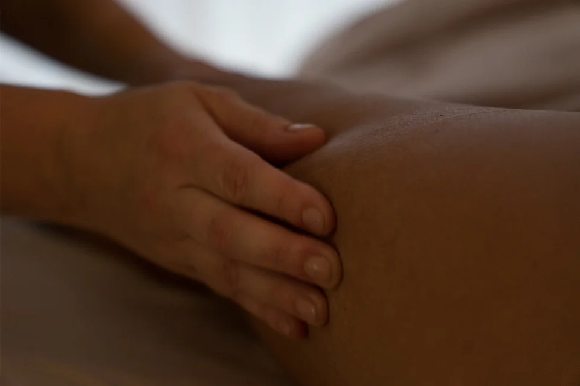
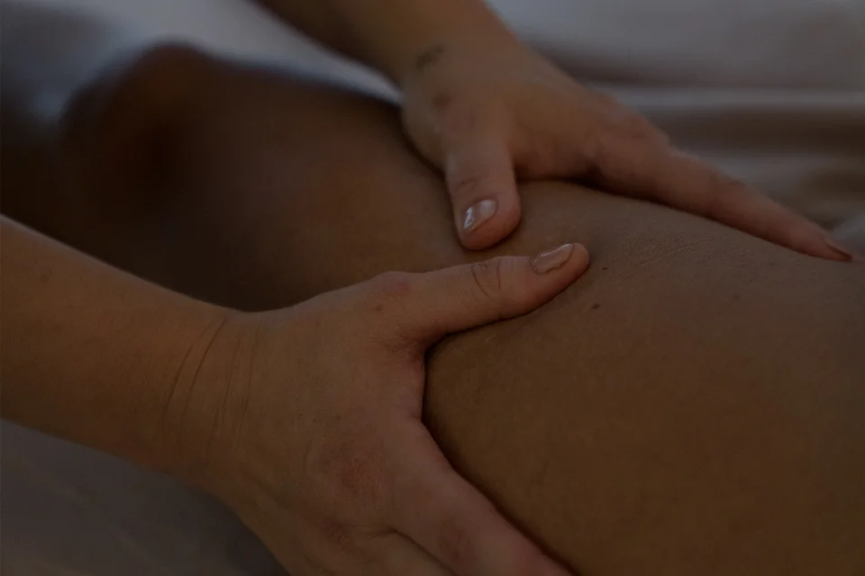
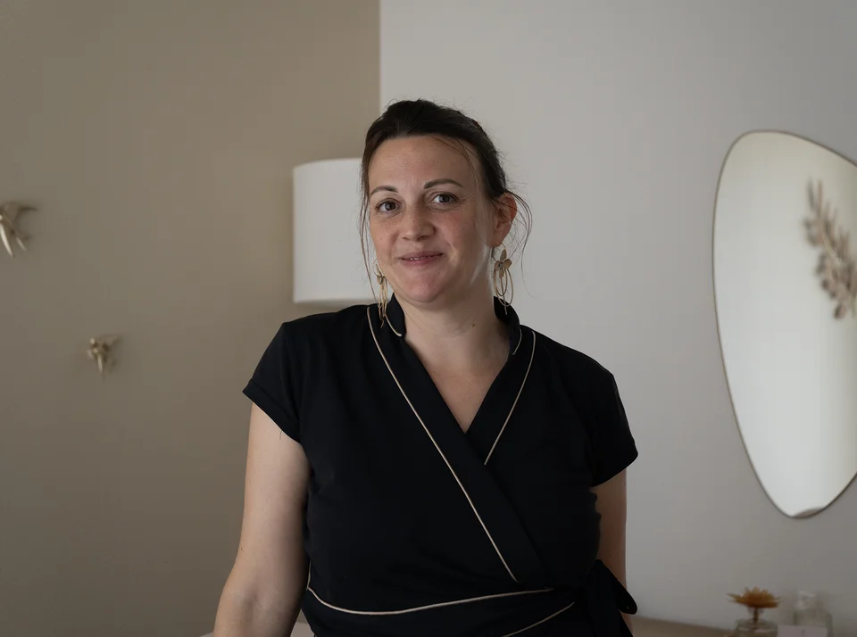

La précision au service du corps
La Méthode Nado® est une technique de drainage lymphatique manuelle fondée sur des gestes d'une précision exceptionnelle, codifiés et transmis par sa créatrice, Élisabeth Nado. Elle stimule le système lymphatique en profondeur — avec une légèreté qui n'a rien à voir avec les massages conventionnels.
Là où d'autres techniques peuvent être inconfortables, la Méthode Nado® repose sur une conviction fondamentale : on ne doit plus souffrir pour être bien dans son corps. Chaque geste est pensé pour accompagner les tissus, jamais pour les forcer.
Les résultats sont observés dès les premières séances — silhouette affinée, jambes légères, rétention d'eau réduite — et mesurés objectivement au fil du protocole.

Ce qui rend cette méthode unique
-
La précision du gesteChaque mouvement est codifié, mesuré, maîtrisé. Il ne s'improvise pas — il s'apprend au fil d'une formation rigoureuse et d'années de pratique.
-
La douceur absolueLe drainage lymphatique Méthode Nado® n'est pas un massage profond. Les pressions sont légères, enveloppantes, respectueuses des tissus.
-
Des résultats mesurésChaque accompagnement commence par une prise de mensurations lors de l'Initiale. Pour un suivi complet, l'Alignement (10 séances) inclut une réévaluation à mi-parcours. Les résultats ne se devinent pas — ils se mesurent.
Drainage et remodelage, deux gestes complémentaires
La Méthode Nado® ne se limite pas au drainage lymphatique. Elle intègre aussi le remodelage esthétique — une technique manuelle plus profonde, qui agit sur la cellulite adipeuse et fibreuse pour restructurer le tissu sous-cutané, améliorer la tonicité cutanée et lisser le galbe de la silhouette.
Là où le drainage relance la circulation et allège les tissus, le remodelage accède aux couches plus profondes que le drainage seul ne peut pas atteindre. Les deux techniques se combinent souvent au sein d'un même accompagnement, dans une séquence pensée pour votre profil.
Découvrir quel protocole vous correspond →
Vous vous reconnaissez dans l'une de ces situations
La Méthode Nado® s'adresse à toute personne souhaitant retrouver légèreté et confort dans son corps — sans chirurgie, sans douleur, sans contrainte.
Jambes lourdes le soir
Sensation d'enflure, fatigue, impression que les jambes « pèsent » en fin de journée.
Rétention d'eau
Gonflement des chevilles, des mains, du visage — souvent associé aux changements hormonaux.
Silhouette à affiner
Cellulite, manque de tonicité, zones récalcitrantes — le drainage agit en profondeur sur les tissus.
Fatigue corporelle
Besoin de relâcher, de se sentir légère, de prendre soin de soi dans un espace dédié.

Certifiée Méthode Nado®
Me former à la Méthode Nado® a été une évidence : son exigence, sa douceur, sa philosophie du résultat sans souffrance. Certifiée directement par Élisabeth Nado, je suis à ce jour la première praticienne certifiée de la région toulousaine.
Cette formation intensive m'a appris non seulement la technique, mais aussi l'écoute du corps, le respect du corps de la femme, et l'exigence du geste juste. Je vous accueille dans mon cabinet de Muret, ou me déplace à votre domicile dans un rayon de 30 km.
- Certifiée Méthode Nado® par Élisabeth Nado, créatrice de la méthode
- Première praticienne certifiée en région toulousaine
- Cabinet à Muret (31600), déplacements à domicile dans un rayon de 30 km
Réservez votre séance l'Initiale
Point de départ de tout accompagnement : 1h30, bilan personnalisé et première séance complète de drainage.